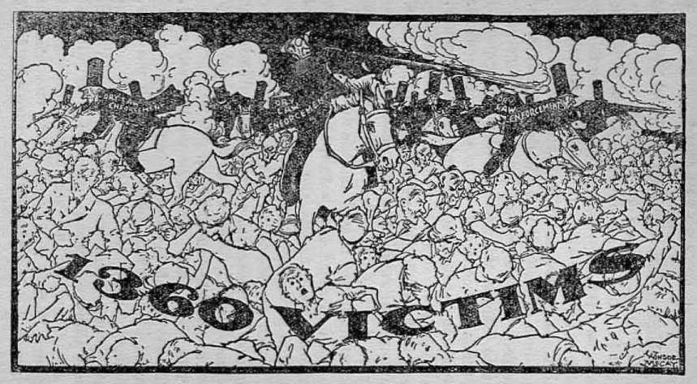
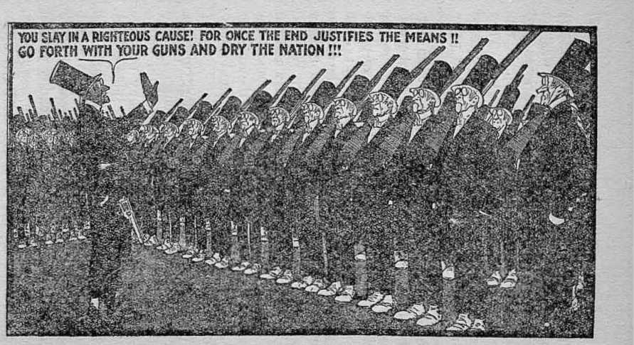
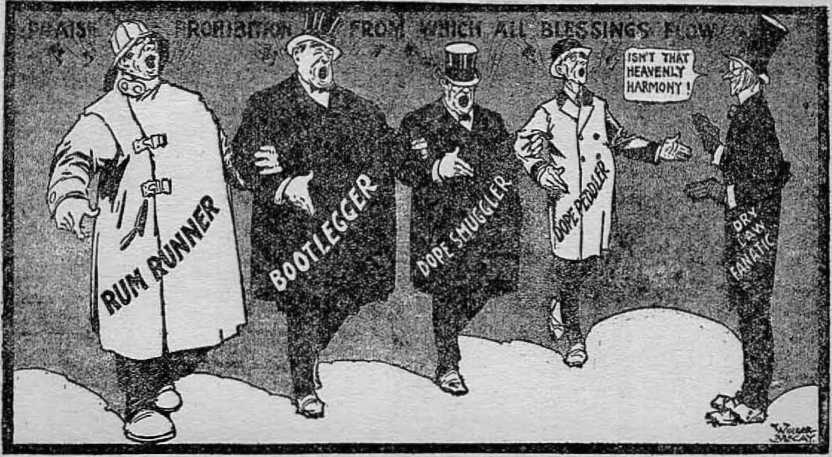
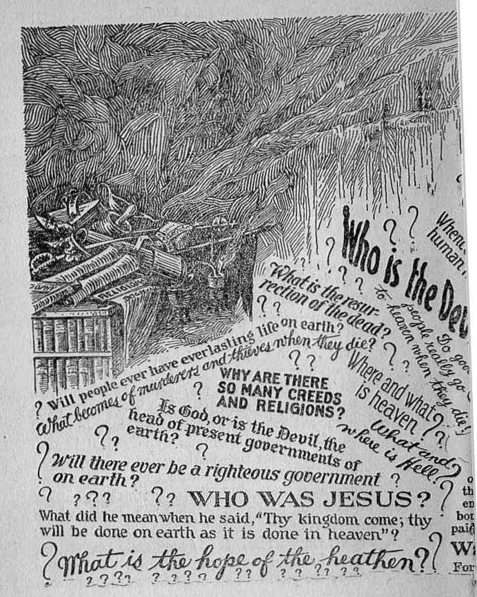
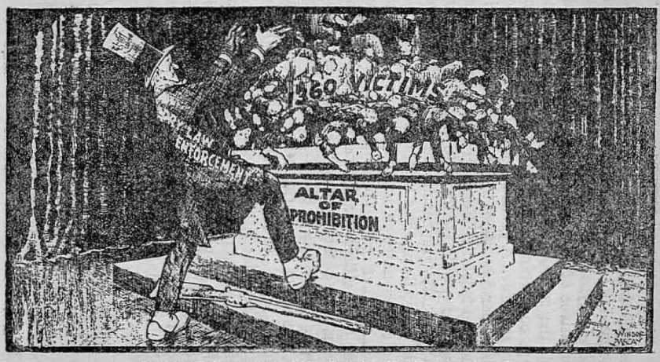
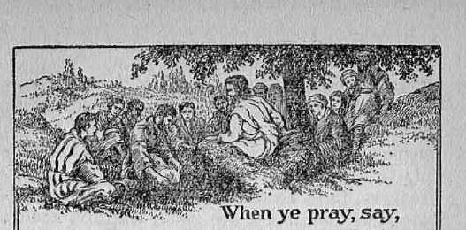

The Harp of God, Deliverance, Creation, Reconciliation.Government,Life,and Prophecy are some of Judge Rutherfords writings. Many of his publications are published in more than 30 languages. Their combined circulation exceeds 70,000,000 copies.
Made in U.S.A.
Copyrighted 1930 by the
International Bible Students Association Publisher:
Wtch Tower Bible ATract Society
Brooklyn,New York,U.S. A.
London .Toronto, STRATKfiELD.CAPETovN.BERNE, Magdeburg
FOREWORD
SOMEONE with sufficient power and wisdom will yet have to tackle the problem of crimes and calamities and to straighten it out. The author points out Who, and How, and How soon, in this booklet. Here’s something different! and interesting! Take out your Bible and prove it.
The Publishers
"DEACE of mind, safety from all harm, se-entity in home, body and life, are things greatly desired by almost all persons. Mankind has suffered much and still suffers by reason of crimes, calamities and other evils. Upon earth there is now much distress and perplexity and men's hearts are failing them for fear. Remedies are sought out and many are brought forward and tried, but no relief comes therefrom.
A true and complete remedy for the evils resulting from crimes and calamities could never be found without first ascertaining the real cause for such evils. There is not the slightest doubt concerning the fact that there is relief for mankind from the effects of evil practices, but knowledge of the provision for such relief must be had before the needed relief can be embraced. Herein an endeavor is made to aid those who so desire to acquire the knowledge proving the real cause of crimes and calamities and like evils and to learn what is the remedy therefor. In so doing, it becomes necessary to make mention of some of the evils that have fallen upon mankind to show who is responsible therefor, to show the inadequacy of human remedies, and then to give consideration to the truth which discloses the complete remedy and deliverance of the people.
If there is provision for the complete deliverance of mankind, that relief must.be provided by Him who created man and who made the earl h for the habitation of man. Jehovah God is the I eternal One who created heaven and earth and man upon the earth. That is the first fundamental truth for men to learn. The Bible is an expression of the will of God, written at the dictation of Jehovah God to enable men who are sincere to learn the truth. It was written by men who were wholly devoted to Jehovah and upon whom his invisible power moved causing them to write it. (2 Sam. 23:2; 2 Pet. 1:21) The Bible is a light to guide the course of men who want to walk in the right way. (Ps. 119: 105) The Bible is the truth. (John 17:17) The man who relies upon God's Word, the Bible, and fashions his course of action accordingly, is a blessed or greatly favored man. (Ps. 1:1, 2) The Bible is the reliable authority for the statements herein set forth. It discloses that Jehovah is the God of Eternity, which means he is without beginning and without end, the great First Cause and the Author and Builder of that which abides for ever. (Jer. 10:10; Ps. 119: 89, 90) He is the Most High, is almighty in power, perfect in wisdom, equal and exact in justice, and is love. Every good gift is from him, and all his ways are right. (Jas. 1:17; Ps. 19:8; 18:30; 145:17) God hates unrighteousness and wickedness and all the workers of iniquity. (Ps. 5:5; 119:104; Prov. 6: 1G) Every act of Jehovah God is prompted by unselfishness and he has pleasure in those who learn to be unselfish.
Many have had great difficulty in believing the truthfulness of these statements concerning the loving-kindness of Jehovah God. Being ignorant of his ways they have in all honesty said in substance: “The world is full of sorrow and woe. There is such a great amount of suffering amongst mankind. Crimes and wickedness and calamities are always with us, and the people suffer. If God is just, wise and all-powerful, loving and Idnd, why would he permit so much wickedness and evil in the world?” The correct answer to this question is absolutely essential to know the remedy for the ills that affect the human race.
Some of the Evils
To consider this subject matter fairly, every side of it must be examined. For this reason some reference is here made to the crimes, calamities and other evils that have come upon mankind. When the human race was in its infancy Cain without cause or excuse murdered his brother Abel, From then till now crimes have been committed by men. The record of every nation that has existed on the earth is smeared with human blood uninghteously shed. For 4,000 years before the coming of Christ to the earth crimes were common amongst men. At the birth of Jesus the angels of heaven sang: 'Peace on earth, and good will toward men.’ Hatred, ill will, malice and murder, however, continue unabated. Even the perfect man Jesus was cruelly and judicially murdered. He was good, holy, harmless, without fault or sin, and yet he was nailed to the cross of wood and died of a broken heart. Nearly all the men who walked with him and served with him were put to a cruel death after suffering great indignities and persecution.
When the followers of Jesus organized into a body or organization and assumed the name of Christ the Roman government persecuted them without a cause and put many of them to a violent death. Then the Roman church was organized in the name of Christ and became a very breeding place of crime. The cruel Inquisition has made a record too horrible for description in human words. In that time, upon tlie slightest suspicion or rumor, a man would maliciously hale his neighbor before the court of inquisition and then upon no proof the man was subjected to indescribable torture. The Eden Museum in New York city today holds as relies for exhibition many instruments of torture that were used to torture men and women who had committed no wrong. These instruments were manipulated in such a way as to pull apart the joints of the body and tear away the flesh from the bone. Some of the victims were required to put on a metal boot which was then filled full of boiling lead, while other instruments were used to gouge out their eyes or cut out their tongues.
The historical record of France is none the less stained with human blood shed to feed the malice of political religionists, of which the massacre of the Huguenots, known as the Massacre of St. Bartholomew, is a striking instance. On the 24th of August, 1572, at the instance of Catharine De Medici, all the leading Huguenots, together with thousands of others of that people, were brutally massacred. So terrible was the slaughter that the River Seine ran red with human blood. Then followed a long and bloody persecution carried on at the instance of the clergy, concerning which is recorded in the Encyclopedia Britannica the following: “Under the influence of the clergy was committed one of the most flagrant political and religious blunders in the history of France which in the course of a few years lost more than 400,000 of its inhabitants.” The malicious clergy of France, together with the arrogant aristocrats and their political liirelings, continued to oppress the common people until the storm of the terrible revolution broke. Then the tide of slaughter was turned, and the ignorant and poor gaining power went mad and resorted to deeds of cruelty and slaughter that beggar description. Almost every man became a spy upon his neighbor or others near by. Upon the slightest suspicion a man would be haled before an ignorant court, given a form of hearing and quickly sentenced to death, and then sent to the guillotine. Thousands of unfortunate persons were thus killed.
Great calamities have befallen the peoples of every nation. Cyclones, tidal waves, earthquakes and floods, disease, pestilence and famines have swept away millions into their graves and suddenly plunged millions of others into great sorrow. In desperation the surviving ones cry out: “Why have these terrible disasters come upon us?”
The increase of education and material wealth has not brought a real reform or desirable condition. It may be said that crime is committed today in a somewhat more refined way, but none the less cruel. The official reports of the nation of the United States show that the annual murder rate in this country has increased 350 percent since 1900 and that the other crimes have increased in like proportion. The president of the United States appointed a Crime Commission to ascertain the cause of crime and to find and suggest a remedy for such erime. In a public address about that time the president said: “Life and property are relatively more unsafe in the United States than in any other civilized country in the world." This time is well on in the twentieth century.
The United States entered the World War in 1917 and sent millions of her men to the scene of battle. In their absence the selfish interests of the country, represented by men remaining at home and urged on to action by the clergy and bootleggers, put the Eighteenth Amendment into the Constitution of the United States. The fact that the clergy took the leading part in this induced millions of order-loving people to think it necessary to join the movement. Shortly thereafter began the increase of crime, and since then crime has continued to increase, much of which is laid properly at the door of the fanatical religionists who caused the making of the law and its cruel enforcement. Intoxicating liquor is still manufactured in abundance in America and certain ones can have it without difficulty, but the poor man who is found in possession of a small amount is caused to suffer punishment. The clergy and other fanatics have urged the most rigid enforcement of the prohibition law regardless of how many laws are violated in so doing.
The New York American on December 11, 1929, says: “At Towanda, Pennsylvania, a half pint of whiskey was found in the wall of a store, resulting in George Vogle being sentenced to three years in jail and $5,000.00 fine andVogle's sister Ruby sentenced to one year in jail and $1,000.00 fine. On the same day at Philadelphia Edward Beaner was sentenced to two years in prison and a fine of $200.00 because a half pint
Courtesy N. Y. American, 1929. Copyright New York Amerkiin, Inc.
of liquor was found in the side pocket of his automobile?
In November, 1929, the Washington Herald published excerpts from public records showing that 1,360 men, women and children had been killed in the attempt to enforce the prohibition law. The New York American describes this as “shotgun prohibition”.
A United States court recently handed down a decision holding that a man who knows that his neighbor is in possession of intoxicating liquor and fails to report that fact to federal officers is guilty of a felony. The cruel and unusual way of enforcing this law paves the way and invites citizens to do spying on one another to bring them Into trouble. It has also opened the way for unscrupulous men to manufacture and distribute poisonous liquors that have caused the deaths of thousands.
The public press is filled daily with accounts of crimes and wickedness in high official places as well as amongst the more degraded people of the land. There is great wickedness in high places, and men in official position resort to fraud and other criminal acts in oppressing the people.
Little children while playing in the streets are struck down and lulled by the reckless drivers of automobiles. The mothers are crazed with grief because of their great loss. The clergymen who officiate at the funerals say in 12 the cause CRIMES AND CALAMITIES the remedy substance: “These little children were innocent and harmless, but God wanted them and he took them away that he might have them with him in heaven.” The broken-hearted mothers hearing these cruel words cry out in despair: ““Why should God want our children? He does not need them. If he is a just and loving God he would not take them away.”
The clergy claim to be God’s representatives on earth. The history of the world shows that they have been connected either directly or indirectly with wars, persecution, murder and even deliberate massacres. The same professional gentlemen tell the people that God is responsible for all disasters that fall upon man, and they increase the sorrow of the parents by telling them that God took away their children, and then ask them to worship God. Thus Jehovah God is charged with conniving at and approving all manner of crimes and calamities. In his name cruel laws are made and maliciously enforced, and many other crimes are committed under the pretext of enforcing the law. The result is that Jehovah God stands charged with all the crimes and calamities that have befallen the human race. The charge is not only wrong and cruel, but a wicked defamation of God’s great and good name. Many of those who take the position that God is responsible for these crimes and calamities cite in support of their contention this Scriptural text: “I am [Jehovah], and there is none else. I form the light,
and create darkness; I make peace, and create evil. I the Lord do all these things.”—Isa. 45:6,7.
*
Evil
This Scriptural text has been greatly misunderstood. Reference is made above to the sufferings of the people from crime and calamities and now to this scripture in order that we might get a proper understanding of both. There is a wide difference between evil, crime, wickedness and calamity. Evil is that which brings adversity or heart affliction or sorrow. Death is a great evil. God created the perfect man, and his work was good. He told man that if he would do good, he would continue in Gbd’s favor; but if he violated God's law, evil would befall him, which evil or punishment would be death. Man violated God’s law and was justly sentenced to death; therefore evil came upon Adam. To be sure, God created that which afflicted and punished the man who broke his law and which brought adversity, sorrow and evil upon man. The above scripture therefore means that God formed the light and the darkness, made peace and good and evil. He made man a free moral agent with the privilege of choosing to do right and receiving blessings for so doing or of doing wrong and receiving that which would be hurtful to him, that is to say, evil. The enforcement of justice worked evil to Adam against whom it was enforced, because it brought adversity and sorrow to him. However, God cannot be guilty of a cruel or wicked act. It therefore follows that not all evil is a wrong, but all wrong is evil.
Crime is a wicked, malicious, mischievous or wrongful act committed in violation of the law' of God. The commission of a crime brings sorrow and adversity, and therefore evil, upon the person against whom it is committed. The lawful punishment of the one who thus committed the crime brings evil upon him; but in the latter instance the evil or punishment is right.
Malicious wickedness is the commission of a wrongful act by one against another, with malice. Such wrongful act is committed without regard to duty toward his fellow man and with an evil intent, the wrongdoer being fatally bent on doing injury to the other. All malicious crime is evil because it works adversely to some one. The parent punishes his child who has committed a wrong. That punishment is right and proper; yet to the child it is evil because it brings sorrow or adversity to the child, even though later that punishment results to the good of the child.
A calamity is that which causes distress, suffering and loss, either to individuals or to communities. When the Egyptian army pursued the Israelites, the chosen people of God, and attempted to kill them, God opened the sea and let the Israelites pass over in safety, and then caused the sea to envelop the Egyptian army and destroy them. Such was a disaster to the Egyptians, but it was a punishment justly inflicted and was therefore right. The Assyrian army attacked God’s chosen people in the city of Jerusalem and defied the Ahnighty God. For the general good of creation and to let men understand that Jehovah is the Almighty God, he sent his angel and in one night slew 185,000 of the Assyrian army. That was a disaster and an evil upon the Assyrian army, but it was justly the infliction of punishment upon them, and God was entirely right and just in administering that punishment.
It is therefore clearly peen that the scripture which states that God makes evil does not at all support the conclusion that he is in the slightest to blame or responsible for the sufferings of mankind. It is the commission of the wrongful act or sin that brings a just punishment. But where a creature attempts to inflict wrong or punishment upon another without just cause or excuse, that is an evil and wrong and a crime.
From time to time there are great cyclones, typhoons, tidal waves and storms.that destroy much property and life, and these are calamities. God is not responsible therefor, as the proof herein set forth will show.
The question is asked, If Jehovah God is almighty in power, perfect in wisdom, exact in justice, and is love, why does he permit so much crime, wickedness, and the practice of evil? Why does he not prevent it ? The wrong answer to these questions has caused many persons to
Watch Tower 117 Adams St. Brooklyn, N.Y.
Tot t*im la wwilp, wH* «> auc offisi, dure. The 11H !■ as the lu: pace.
For ages men have endeavored to lift the veil of
the future and understand the Bible prophecies concerning the establishment of God's righteous government on earth which would bring justice, peace, health, happiness and life to the human race. “When shall these things bet" has been the great question passed unanswered down the
centuries until tins very time. As incredible as it may seem, we now make bold to declare that the time of the understanding of these prophecies has come and that a concise, plain explanation of them is given in this uew book. The author sets forth such an amazing array of indisputable facts, the conclusion is irresistible that we are right on the eve of the most wonderful time in the history of the earth.
So tremendous is the demand for PROPHECY that our first printing is one million copies. It is cloth-bound and has many very beautiful illustrations in it. Ou receipt of 45c we will mail you this book. turn away from God. The false answer is therefore first considered, in order that we may better appreciate the true answer.
False Answer
The reason often given, and which is not correct, is this: That God has permitted the practice of evil in-order that men might learn the exceeding sinfulness of sin, and in order that the angels might learn similar lessons by observation. The proper response to such conclusion is this: If God permits the practice of wrong or evil for the reason above stated, that it might teach lessons of the exceeding sinfulness of sin, then it must follow that the same has been practiced with the connivance and consent of Jehovah, and therefore he is responsible. The indisputable facts, however, show that man could not learn the needed lessons in this manner, for the following reasons: Fully fifty percent of the human race died in infancy and without the capacity to discern between right and wrong, and hence could not learn. Of the other fifty percent, at least nine-tenths of them have died as mental infants, regardless of age, and without the Scriptural knowledge of what is right or wrong, and hence they could not learn. When all these dead ones are brought back from the grave wrongdoing will then be restrained. Those who then wilfully persist in doing wrong will be destroyed and remain dead for ever. Therefore there would be no oppor-
]g the cause CRIMES AND CALAMITIES the remedy tunity to learn needful lessons by experience. The Scriptures clearly show that God will restrain wrongdoing in the future, and therefore there must be some good reason why he has not restrained wrongdoing, or the practice of evil, up to this time.
The True Answer
The Scriptural, and therefore the correct, answer concerning evil and wrongdoing must be consistent with the just and loving God. The correct answer, therefore, is briefly stated in the abstract, and then the proof of its correctness will be submitted. God has not heretofore restrained evil resulting from wrongdoing, because his name and his word are involved and in wisdom he awaits his own due time to demonstrate to all creation that he is the only true God, that his word is right and true, and that his name is without just reproach. The one who is held responsible for wrongdoing or evil and the practice thereof is Satan the Devil, who is the greatest enemy of man. Originally his name was Lucifer, which means bright-shining one or morning star. Because of his wrongdoing his name was changed, and since that time the Scriptures have designated him as the Dragon, meaning devourer; the Serpent, meaning deceiver; the Devil, meaning slanderer; and Satan, meaning adversary. The Bible record briefly stated is as follows:
Jehovah God created Adam the perfect man and placed him in Eden his perfect home. (Gen. 2:7; Dent. 32:4) Lucifer was made man’s overlord, with the power to inflict death, which he was to do as God’s officer, and to inflict it as a punishment for the violation of God’s law. (Ezek. 28:14; Heb. 2:14) God announced that man would suffer the death penalty if he violated God’s specific law. (Gen. 2:17) The right to life proceeds from Jehovah God, and his law announced, in substance, that all who would live must be obedient to the Creator, and that disobedieuce would result in death. Life is a ' gracious gift from Jehovah; and since he is the exclusive source of life, no one would be entitled to Efe everlasting unless he remains in harmony with Iris Creator. Man worshiped his Creator God. Lucifer was covetous and desired to have that worship for himself. (Jer. G: 13) To accomplish his selfish purpose he became a traitor to Jehovah God and wilfully and deliberately betrayed the trust placed in him. He therefore reasoned that if he, Satan, could turn men and angels away from God, he would receive the honor and worship that was properly given to Jehovah. He set about to accomplish his purpose, and to do this he began to reproach the name of Jehovah in his attempt to prove that Jehovah’s word is false. He reasoned that if man did sin and God did not put him to death, that would prove God a liar, because he would not faithfully keep his word; that if Adam
Nothing that has ever been written, aside from the Bible itself, shows up the utterly foolish theories of college professors, doctors of divinity, and leaders of modern institutions of education, ns does Judge
Rutherford's book
In this remarkable book the author presents a clear, logical explanation of the Bible record of the creation of earth, planets, vegetation, animals and man. No right-minded person can read this book without acknowledging that the Bible is right and that all those who pit their own wisdom, guesses and gibberish against the Bible arc exactly what it calls them, just “fools”.
The reasonableness, the accuracy, the majestic dignity of the Bible as brought to our view in CREATION will thrill the heart of every reader and silence for ever the vain babblings of all its opposers.
Why not send 35e for this beautiful cloth-bound book, gold stamped and embossed? We will mail it anywhere postpaid.
Watch Tower 117 Adams St- Brooklyn, N.Y.
for pricct Ip other wnw cq cmt there, The li»c fc pa the hue p*$e. sinned and God enforced the death penalty, that would prove that God’s work of creation was imperfect, and that his wisdom is imperfect and that he could not put a man on earth who would maintain his integrity with Jehovah. He concluded that in either* event the name of Jehovah would be reproached, his word would be proven unreliable, and this would show that his wisdom and power were not perfect, and therefore all creation would lose confidence in him and forsake him.
Following out his evil reasoning Satan approached Eve and deceived her, and thereby earned the title of Serpent, which means deceiver. He said to Eve: “If you eat that fruit you shall not surely die, for God know’s that in the day you eat thereof then your eyes shall be opened and you shall be as gods, knowing good and evil/ (Gen. 3:4-6) Satan there put in issue the word of God. Eve was deceived by Satan and was thereby led to violate the law of God. “Adam was not deceived,” but because of his selfishness wilfully violated God's law. Therefore God, malting good his word, sentenced man to death and expelled him from Eden, and the result was that evil or death came upon man because of his own wrongful act. It was after this sentence that children were born to Adam, and by inheritance they became sinners. An imperfect creature could not beget perfect children; hence by inheritance all of Adam’s children came under condemna-
22 the cause CRIMES AND CALAMITIES the remedy tion or disapproval, being born sinners. ‘They were born in sin and shapen in iniquity.’ (Ps. 51: 5) “Wherefore, as by one man sin entered into the ■world, and death by sin; and so death passed upon all men, for that all have sinned. Therefore, as by the offense of one judgment came upon all men to condemnation; even so by the righteousness of one the free gift came upon all men unto justification of life.”—Rom. 5:12,18.
The children of Adam were not sentenced to death, but by inheritance they were born imperfect; and all imperfect creatures must of necessity be disapproved and hence condemned. In due course of time Adam died and returned to the dust of the earth. All of his offspring have been dying since. Who, then, was and is responsible for the wrongdoing which resulted in the evil of death upon Adam and upon all mankind? Surely not God, because Jehovah God was doing right and did right in sentencing Adam to death for the wilful violation of his law. Satan was the wrongdoer. He lied about God, deceived Eve, and induced sin or wrongdoing by Adam, and is therefore the reprehensible and responsible one. In proof of this, Jesus said of Satan that “lie was a murderer from the beginning, and abode not in the truth, because there is no truth in him. When he speak-eth a lie, he speaketh of his own: for he is a liar, and the father of it”.—John 8:44.
The wrongful act of Satan, which resulted in evil upon mankind, also brought reproach upon the word and name of Jehovah God. Satan succeeded in drawing after him in wrongdoing a great number of the angels of heaven; and to this day the great mass of mankind, because of Satan's wrongful influence, are in darkness and are turned away from Jehovah God.
The Bible record concerning Job is a picture of Satan's course and the wrongdoing resulting in evil that came upon man. In substance Satan said to Jehovah: Ton cannot put a man on the earth who will maintain his integrity and faithfulness toward you. Take away your protection from Job [representing the entire human race] and I will make him curse you to your face? (Job 1:11; 2:4,5) Satan, therefore, challenged the word of Jehovah and cast reproaches upon his name, and thereby put God’s word and his name at issue or in dispute. Being all-powerful, Jehovah could have destroyed Satan immediately and created another perfect man and started him on the way. Had he done so he would have proven his justice and his power, but he would not have been displaying his complete wisdom, and there would have been no opportunity for love to be made manifest. God abided his own good time to execute his righteous law against man and against Satan and at the same time to vindicate his word and his name. The wisdom of Jehovah was and is beyond the understanding of Satan.
At that very time God purposed to kill Satan in due season and to redeem mankind and to furnish all an opportunity for life, but this fact could not he known by the wicked Satan. God accepted the challenge of Satan and said: "My word . . . shall not return unto me void; but it shall accomplish that which I please.” fT have spoken it, I will also bring it to pass; I have purposed it, I will also do it.” (Isa. 46:11) In substance God said to Satan: ‘Go on and do your worst, and in my own due time and way I will prove to all creation that my word is true and that my name is beyond just reproach.'* (For a full discussion of this point the reader is referred to the book Life.)
Jehovah’s Purpose
The purpose of Jehovah from the time of the tragedy in Eden was and is to provide redemption for mankind by means of a substitute or ransom sacrifice and then to open the way for man to return to him and be restored to life and to have all the blessings incident thereto. His course will fully prove that Jehovah God is both just and the justifier of all that are obedient to him; and, above all, he will vindicate his word and his name before all creation. “Known unto God are all his works, from the beginning.” (Acts 15:18) Such wisdom and power was and is beyond the understanding of the wicked one Satan. Having become wicked, Satan has gone on in his course of wrongdoing
is a book of facts vitally important to every person on earth. In it will be found clearly and simply set forth God’s way, and therefore the only way, for man to obtain everlasting life on earth. God made this earth for man, and made man for the earth.This book brings to the attention of the reader J eho vah’s graciou s prov ision for man's unending life on earth in health, happiness and peace. The proof set forth on its pages shows that his due time has come for people to understand and know the way to life.
LIFE will give all its readers a view of life they never before had. It will make life really worth living. This unusual book, of 368 pages, is embossed, gold stamped and illustrated. 45c will bring LIFE to you.
Watch Tower 117 Adams St. Brooklyn, N. Y.
For prices in other countries, write to our offices there. The list u on the last page. and gross wickedness. God could have prevented him, hut he has been wise to let him go his limit and thereby to afford an opportunity to some men under the most adverse conditions to prove their fidelity and faithfulness unto God. At all times God has kept his name before creation, and some men have proven their devotion to God under the most difficult conditions. To these God will grant a special blessing of reward. The mass of mankind, however, have been blind to the truth by reason of Satan’s fraudulent and deceptive methods of wrongdoing. In due time God will give all of these an opportunity to be lifted out of their distressing conditions.
Satan has builded a powerful organization, and at all times there have been and are now three primary elements composing that organization, to wit, the commercial element, the political element and the religious element. These three work together under the invisible power, influence and control of Satan, the majority of the persons in them being wholly ignorant of the subtle influence of the evil one. All the heathen religions Satan lias organized and carried on to the reproach of the name of Jehovah God. Christianity was organized in purity but Satan soon deceived and overreached the leaders in the church organization, and as a result Christianity turned into a cruel and evil “vine of the earth’’.—Jer. 2: 21-24.
The Jews were God’s qhosen people, and the most prominent element of that nation was the religious element. The priests, Pharisees, and Sadducees were leaders or clergymen. It was their duty to teach the people God’s law. They were overreached by Satan the Devil, turned away from God, became hypocrites, and practiced fraud. It was the religious leaders who caused the arrest of Jesus, his trial upon perjured testimony, and his wicked and cruel crucifixion on the cross; and the Devil is the one who induced them to do it, as the Scriptures plainly state. (John 8:44; Luke 22:2,31; John 13: 27) It was the religious fanatics who caused the arrest and trial of Stephen upon a false charge and upon perjured testimony. Without cause or excuse he was adjudged guilty and put to death. The same class of men caused the persecution and death of nearly all the apostles of Jesus Christ. Satan the wicked one brought about this evil result upon them.
Without a doubt many of the clergymen entered the ministry with all good conscience and with a desire to do good. Because of the subtle and wicked influence of Satan many of them yielded to flattery, and to gratify their selfishness they were easily induced to join hands with the commercial and political forces of the world. Men claiming to be representatives of God and of Christ on earth have readily yielded to prejudice, selfishness, and like besetments, and have become the tools for the Devil whom
YOU SLAY IN A RIGHTEOUS CAUSE! FOR ONCE THE END JUSTIFIES THE MEANS I! GO FORTH WITH YOUR GUNS ANO DRY THE NATION
Courtesy N. Y. AmeHeon, 1929. Copyright New York American, Inc.
he has used to carry on his wicked work. This has gone on to the point where today the majority of the clergymen repudiate the Bible and repudiate God the Creator.
On November 5, 1929, the United Press published the statement from Bishop Manning that in one theological university in America only one professor believes in God. The greatest wrong is to turn mankind away from Jehovah God the Creator; and this is Satan’s chief work, and he blinds many men and uses them for that purpose.
It was the clergy of the Roman church, ■who claimed to be the representatives of God on earth, who caused the wholesale slaughter of the French Huguenots. It was the same class of men who created and carried on the Court of Inquisition which condemned thousands of innocent men and women and put them to a cruel and unusual death. It was John Calvin, the great Protestant clergyman, who signed the death warrant and caused Servetus to be burned to death at the stake because he did not subscribe to Calvin’s faith. Satan was the power that caused these wicked deeds; and because the visible perpetrators of such wrongs claim to be representatives of God, their course of action has brought great reproach upon the name of Jehovah God, and many have -wrongfully charged God with these terrible crimes.
It was the clergy of America that led the campaign that put the prohibition amendment
Courtesy N. Y. A»nerfcan, 1929. Copyright New York American, Inc.
into the Constitution while the honest men and women were forced to the front to battle for the commercial and political interests of the world. It was the clergymen, urging the use of any and all means to enforce the prohibition law, that have caused many to suffer greater and unusual punishment and caused the shotgun to be invoked therein, upon the pretext of enforcing the law, thereby causing the untimely deaths of 1,360 men and women within, a short time, from gunshot wounds. It is the clergymen who furnish the sanctimonious screen behind which profiteers, the conscienceless politicians, and the bootleggers shield themselves while they join in singing the praises of prohibition and while the people suffer.
Satan is called “the prince of the power of the air” (Eph; 2:2) and “the prince of this world". (John 14:30) He has great power to stir up storms and floods and bring like calamities upon the peoples of earth. This he frequently does, and is therefore responsible for the wicked calamities that befall mankind, and through his sanctimonious hypocritical instruments he causes these calamities to be charged up against Jehovah. Satan caused the storm to arise on the sea of Galilee, with the manifest purpose of destroying the Lord Jesus, which is proof of his power thus to do. (Mark 4: 37, 3S; Luke 8: 23) It is specifically stated that Satan brought upon the children of Job the calamities of fire and a gi'eat windstorm and
g TAKES ITS RIGHTFUL PLACE!
Out from under the cloak of mysticism, away from the fogs of clerical 1 stupidity and the rubbish of creeds and religious fanaticism, the Bible , arises to take its unimpeachable, its indisputable place as the Word of
Almighty God, the very fountain of reason, logic and light!
V Judge Rutherford's seven extraordinary books conclusively prove that there is a logical, perfectly reasonable and entirely satisfactory answer 7 to every question that any intelligent person has ever asked or can. ask L about the Bible or about its great theme—life itself.
sWlffyi • * And so we could go on with hundreds of questions every
(W 0 A one of which is simply, yet comprehensively answered by the » n author in this remarkable set of books. Being thoroughly convinced
■ that Judge Rutherford is right and that some means should be found to make a gigantic world-wide distribution of his masterful defense of the i Bible, a most unique, arrangement has been made. Hundreds of men and women are so appreciative of the comfort and benefit they themselves have received from reading these books that they are, without pay or remuneration )f any kind, giving their time and labor to the production and distribution of us set of volumes. That is the reason we are enabled to make the offer of the
itire set, just as shown on the back cover of this booklet, all seven books cloth-rnd, 368 pages or more each, with many four-color illustrations, delivered post; to anyone, anywhere, for only $2,40.
ittch Tower . 117 Adams St.
Brooklyn, N. Y
'prices in other countries, write to our offices there. The list is on the last page.
34 TUB CAUSE CRIMES AND CALAMITIES the remedy other calamities. (Job 1:12-19) Jehovah God never uses his force or power to bring evil upon his creatures except to administer a just punishment for wilful violation of his law. Satan exercises his power to bring calamities upon mankind and in so doing is prompted solely by malicious wickedness, and then he induces his instruments to charge these against God.
God sent Moses and Aaron with the message to Pharaoh the king of Egypt to command him to let the Israelites go, and upon the refusal of the king the calamity of frogs came up and covered tjie land of Egypt. Then the magicians did so with their enchantments and brought frogs upon the land of Egypt. (Ex. 8:7,8) This and other plagues God brought upon Egypt as a just punishment, and the fact that the Devil brought similar things forward shows that he had power and has the power thus to do. The just conclusion, therefore, is that all the pests and bores and vermin that destroy the fruits and vegetation of the peoples of earth arc. the results of Satan’s wicked work and practices to cause the people to curse God. Instead of God being responsible for the calamities, Satan is responsible for all of them, except su&h as are specifically set forth in the Scriptures that God has used to justly punish wrongdoers.
It is Satan the Devil who first said: 'There is no death? (Gen. 3:4) It is the clergy who stand in their pulpits and at the funeral bier and say
to the people: “There is no death/’ even though while the corpse of the dead one lies in front of them. They proceed to tell the people that the dead are more alive after than before death. It is these men that tell the unfortunate and sorrowful parents that God took away their children. All such statements are absolutely false and proceed from Satan the Devil. The men who utter these falsehoods may be ignorant of the fact that they proceed from the Devil, but that makes it none the less wrong and wicked. The proof is conclusive, therefore, that Satan is the one who is responsible for the evil upon mankind that results from wrongdoing.
These things are stated here for the purpose of enabling the searcher after truth to understand that not all evil is wrong but all wrongdoing is evil, and further to enable one to see that the evil that God brings upon creatures is because his law has been violated and he Justly punishes them, whereas all malicious crime and all wrongdoing resulting in evil is caused and induced by Satan the Devil. He is “the wicked one”. (2 Pet. 3:17; 1 John 2:13,14; 3:12; 5; 18) The Lord God has expressed his purpose in due time to destroy the wicked one, and that when that due time comes “then shall that wicked [one] be revealed, whom the Lord shall consume with the spirit of his mouth”. (2 Thess. 2:8) Satan the wicked one is now revealed as never before. The Scriptural proof is therefore clear that all wrongdoing and other wickedness
that causes the people to suffer evil emanates from and is induced by Satan the Devil. Seeing then the real cause, we must look for the remedy therefor from the proper source.
Remedy
• If in fact the clergy represent Jehovah God, they would believe the Bible and follow its teachings concerning the cause of evil practices and wrongdoing and would rely upon the remedy set forth in the Bible. Any remedy suggested that is not supported by the Bible can not be a true remedy, regardless of the motive that prompts its suggestion. Satan is a subtle foe and we should expect him to bring forth subtle and fraudulent remedies which on the face of them might appear to be feasible. That is exactly what he has done. God sets forth in the Bible the complete remedy for all the ills that have come upon mankind, but his remedy the clergy ignore. Attention is called to it, not for the purpose of bringing the clergy into the limelight, but in order that the people might see that the relief to humankind must come in God’s own appointed way. To the end that we might see that the clergy are not following the Lord's way to remedy evil some further facts are here submitted:
When President Hoover appointed his Crime Commission for the announced purpose of ascertaining the cause and bringing forth a remedy for crime, the clergy had a splendid oppor-
tunity to come forward and call the president's attention to God’s true remedy. The presumption must be indulged that if they knew of this remedy and were honest they would have told the president what it is. If they did not know of it, then they are willingly ignorant of what the Lord has set forth in his Word and should refrain from holding themselves out as instructors of the people in the way of righteousness. They missed a glorious opportunity to tell the president and the people how God will remove crime, wickedness, and the practice of wrongdoing on earth. According to the public press the clergymen sent a delegation to Washington, which appeared before the president and offered to follow his lead and to do whatever he would suggest to bring about a better condition, instead of asldng him to join with them to follow God’s remedy. The New York Times and other papers, under date of June 20, 1929, speaking of this matter, reported the following:
The Rev. Doctor Cleland B. McAfee of Chicago, Moderator of the Presbyterian Church in the United States, informed the President that the Presbyterian Church had created a commission to restrain the spread of lawlessness. Doctor McAfee among other things said:
“At the recent session of our general assembly, the highest of our church, consisting of 1,000 representatives chosen by the members of the ehurch from every part of the country, keen interest was taken in every reference to the subject of law observance and
38 the cause CRIMES AND CALAMITIES the remedy the duty of the church. to aid in forming a better spirit in that regard.
‘ ‘ The moderator was instructed by unanimous vote to appoint a national loyalty commission, whose duty would be to express to you the mind of the church in its loyal response to the call you have made, and to do its utmost to answer that call through all our church agencies.”
‘‘No law is here involved because it is law itself which is involved,” he contended.
“If now, Mr. President,” Dr. McAfee concluded, “you have any word or call or challenge, of guidance or warning, to say to us, be assured it will be received in a spirit of readiness to help and of eagerness to carry on a program which is essentially a phase of our immediate church duty.” '
This statement of the clergymen, made through their spokesman, shows that they are wholly disqualified to act as advisers of others concerning the moral reform and cleaning up of the world. These men should know that for many centuries men have tried reforms by means of enacting drastic laws and enforcing them against some, with the result that today the criminal condition is worse than ever before. Furthermore, the statement by the ministers to the president shows that they do not believe the Bible is God's Word of truth, because they entirely ignore it and announce their willingness to join any man-made schemes for reform that seem plausible.
If it is important to obey the laws of the nation, with stronger reasoning is it important to
obey the law of God, because every just law of the land is based upon God’s righteous law. If the clergymen will continue to pose as representatives of God and Christ, then they should tell the rulers and the people what God’s law says concerning crime, its cause, and the remedy therefor. A great responsibility rests upon those men who claim to represent God and who claim to teach his Word. If such men teach and lead the people contrary to the Word of God, they thereby reproach the name of Jehovah and make themselves by their course of action the representatives and servants of Satan the enemy. There can be no straddling of the issue. They are either for the Lord or against him. Jesus with authority said: “He that is not with me, is against me.” (Matt. 12:30) God’s kingdom is not of this world; otherwise Jesus would have so said. (John 18:36; Matt. 6:10) Men cannot be friends of or part of this world, of which Satan is god, without being against God. (Jas. 4:4; 2 Cor. 4: 3,4) The clergy, by volunteering to follow any remedy the president would suggest, thereby repudiated God’s remedy and openly acknowledge themselves a part of the world. Shotgun methods are used to enforce the prohibition law, and the clergymen by their words and course of action approve such sacrifice of human flesh and blood upon the altar of the country. In so doing they violate Jehovah’s law which says: “Thou shalt not kill.” The shedding of the blood of 1,360 men and wo-
Courtesy N. Y. American, 1920, Copyright New York American, Inc.
men in an attempt to enforce the prohibition law can hardly he justified upon the ground that it was necessary.
But it may be said that, because these gentlemen for whom Dr. McAfee spoke are ordained of men to be preachers and occupy the exalted position of clergymen in the land and claim to be the apostles of Jesus Christ, therefore any method of reform approved by them must be approved by Jehovah. In reply to that statement it is written: “For such are false apostles, deceitful workers, transforming themselves into the apostles of Christ. And no marvel; for Satan himself is transformed into an angel of light. Therefore it is no great thing if his ministers also be transformed as the ministers of righteousness; whose end shall be according to their .works.”—2 Cor. 11:13-15.
No one could well contend that the prohibition law and its enforcement by imprisonment and death is God's remedy for preventing the practice of wrong. Therefore it must be the remedy brought forth by Satan. In this Satan appears as an angel of light, because there is an outward show of moral reform, and his ministers advocating such reform likewise hold themselves out as messengers of light, even as the Lord foretold it would be at this time. There is a great desire on the part of order-loving and honest people to clean up the nation and, they being ignorant of God’s way of doing so, it is easy to inveigle them into a fraudulent
42 the CAUSE CRIMES AND CALAMITIES the remedy scheme. In full accord with the scripture above quoted the facts show that Satan has transformed himself into an angel of light and the clergy do likewise. The result is that many suffer and many more are turned against Jehovah God.
Increased Crime
All must admit that there has been a great increase of crime and other wrongful acts during the past ten years. Some claim that this increase of wrongdoing is due to the prohibition law and its attempted enforcement. Undoubtedly it has contributed thereto, but the prohibition law and its enforcement is not the real cause of the increase of crime in the world. The real cause is this: Satan's world has ended; God’s time is at hand to oust Satan; and Satan, knowing that Iris time is short until the final conflict, is seizing every means to confuse the people, plunge them into wrong doing, and turn them away from Jehovah God. The Scriptural proof thereof is here submitted:
Long ago Satan became the god or invisible ruler of this world. (2 Cor. 4: 3,4; John 14: 30) The Scriptures make it clear that his period of operation without interruption would continue for 2,520 years after the overthrow of King Zedekiah. That period of time ended in 1914, and Jesus said the proof of the ending of Satan's world would be the beginning of the World War and the attending sorrows upon the peo-
pies of the earth. (Matt. 24:3-3) The end of the world also marked the second coming of Christ. He it is whose right it is to rule. (Ezek. 21:27) That means the time to begin action against Satan to oust him from his position of power. (Ps. 110:1,2) Jehovah has set Christ Jesus as’King upon his throne, and he began to exercise his power in 1914, as shown by the Scriptures and the facts. (Ps. 2:6) In harmony with the proof concerning the end of the world, the second coming of Christ as earth’s rightful ruler and the taking by him of his power to reign, it is written: “’We give thee thanks, O Lord God Almighty, which art, and wast, and art to come; because thou hast taken to thee thy great power, and hast reigned. And the nations were angry, and thy wrath is come.” (Rev. 11: 17,18) Thon followed the war in heaven with Michael, who is Christ Jesus, and his angels on one side, and Satan, the old Dragon, or Devil, and his angels on the opposing side; in which warfare Satan the Devil and his forces were defeated. “And the great dragon was cast out, that old serpent, called the Devil, and Satan, which deceiveth the whole world; he was east out into the earth, aiid his angels were cast out with him.”—Rev. 12: 7-9.
Since being cast out of heaven, Satan has confined his operations to the earth; hence the great increase of wickedness amongst ungodly persons. The Lord warned the peoples of earth against the great wickedness of this present
44 the cause CRIMES AND CALAMITIES the remedy time when he caused to he written these words: “Woe to the inhabiters of the earth, and of the sea! for the devil is come down unto you, having great wrath, because he knoweth that he hath but a short time." (Rev. 12:12) That scripture gives the reason for the great increase of crime dui'ing the last ten years.
Satan is the arch-criminal. He causes the great increase of wickedness and crime in the earth, and then brings forth along with it a makeshift of reform with the. evident purpose of driving the order-loving people into the church organizations which form a part of this world, or his organization, and thereby he turns them away from Jehovah God.—2 Cor. 4:3,4.
The next great act will be “the battle of that great day of God Almighty", which fight will be led by Christ Jesus against Satan and his forces. The Scriptures declare that preparation is now in progress for that great battle. (Rev. 16:13-16; 19:13-15) The World War of 1914 was the “beginning of sorrows”. (Matt. 24:8) “The battle of that great day of God Almighty" will be the end thereof. (Matt. 24:21, 22) From the end of the war in 1918 until the 'battle of God Almighty’, or Armageddon, is the period of tune in which preparation is being made for the final conflict. While this preparation is going on, God’s faithful witnesses are commanded to go throughout the land and tell or preach to the peoples of earth for a witness that the world has ended and God's kingdom is at the door; and this they are doing. (Matt. 24:14) Satan the Dragon is furiously angry with these witnesses who obey Jehovah’s commandments, and he makes war against them. (Rev. 12:17) Knowing that his time is short to prepare for the final conflict, he uses all possible means to offset the testimony of the truth concerning God's kingdom, in order that he might deceive the people and turn them away from Jehovah God.
Satan causes all manner of crimes and calamities to be charged up against Jehovah God, and causes his ministers to teach the people that the sorrows here are just the beginning of what God will heap upon them eternally; then in order that Satan might appear as an angel or messenger of light, he causes his ministers to bring forth the League of Nations and announce it as the substitute for God’s kingdom; and a World Court to settle the controversies; and peace pacts for the prevention of war, as a pretext. These things claim the attention of the people, and at the same tim§ the rulers of the nations are hurrying to make preparation for more war.
America has since its foundation been noted as the land of religious freedom, and it is claimed generally to be a Christian nation. America was the ideal place for Satan to inaugurate the so-called 'prohibition law*. The liquor traffic has been a great curse to humankind, especially in America, and an attempt to eradicate that would appeal to the lovers of righteousness; therefore the prohibition movement has seemed to be a movement in the right direction and that movement forces millions of people into the churches, whose ministers deny God and his Word, dishonor Jehovah and bring reproach upon his name. As the peoples’ attention is directed to the League of Nations and laws for cleaning up the earth, their minds are drawn away from Jehovah and his complete remedy for reformation.
If the prohibition movement were God's remedy to clean up the world, it would succeed. The fact that the prohibition movement has failed is conclusive proof that it is not God’s remedy. During the last ten years there has been a great increase of all kinds of crime. There have been many great calamities, such as floods, fires, earthquakes and tidal waves, all of these being brought about by the operations of Satan and wrongly charged against Jehovah God. The people are thereby deceived and blinded to the truth.
The world having ended In 1914, and the beginning of sorrows being the World War and attending troubles, and preparation being now under way for the final conflict, that great trouble will take place marking the complete end. . The proof is conclusive that we are now in what the Scriptures call "the last days”. The conditions that are about the people now are clearly described in the following scriptures: “This know also, that in the last days perilous times shall come. For men shall be lovers of their own selves, covetous, boasters, proud, blasphemers, disobedient to parents, unthankful, unholy, without natural affection, trucebreakers, false accusers, incontinent, fierce, de-spisers of those that are good, traitors, heady, highminded, lovers of pleasures more than lovers of God; having a form of godliness, but denying the power thereof: from such turn away. Fox- of this sort are they which creep into houses, and lead captive silly women laden with sins, led away with divers 1 nsts, ever learning, and never able to come to the knowledge of the truth. Now as Jannes and Jambres withstood Moses, so do these also resist the truth: men of corrupt minds, reprobate concerning the faith. But they shall proceed no further: for their folly shall be manifest unto all men, as theirs also was.”—2 Tim. 3:1-9.
It is therefore folly to attempt to reform the wicked world by man-made schemes. Why waste time and energy to follow a trail that is absolutely blind and must lead to disaster? "Why not turn to the Bible, which is the Word of God and the truth, and learn the real cause and the real remedy for the ills that affect humankind? Such is the purpose of what is here written.
True Remedy
Jehovah God has provided the complete remedy for all the afflictions that have beset man-
This prayer soon to be answered, says Judge Rutherford, in his book.
Man's utter failure to establish a righteous government on earth ,is proven by the fact that, despite all the boasts of modern civilization, despite learning and inventions, there is more bloodshed, more preparation for wars, more terrible engines of destruction, more poisonous gases, more crooked politics, more corrupt governments, more injustice in the courts, more non-'sense from the pulpit and newspapers, than ever before in the history of the world. Happiness, health, life, will come only when God's kingdom is setup on earth: and the author presents indisputable proof that the lime for the establishment of that righteous government is at the door.
This, another beautifully bound book, illustrated, is offered to you for 40 c a copy. We’re sure you will like it!
Watch Tower ht Adams st Brooklyn, N.Y.
p-jr prices in oilier countries, write to our offices there. The Illi Is on the loti paeo.
kind. That remedy is his kingdom over which Christ will be the invisible ruler. Before righteousness could be established on earth, that wicked one Satan must be completely dethroned and his organization destroyed. That is the next great act that will be performed toward the establishment of righteousness. And the facts in connection with the Scriptures show that this great act is in the very near future. God foreshadowed this great conflict when he destroyed the world in the flood. (2 Pet. 3:4-7) Again he foreshadowed and foretold it when he destroyed the Egyptians and delivered the Israelites. These things he did to make for himself a name, that the people might know that he is the Most High; and he thus foretold the destruction of Satan’s organization in the end, and the purpose thereof.—2 Sam. 7: 23.
The great battle of the “day of God Almighty'’, and which is often called Armageddon, must be fought some time following the World War. That wrar ended in 1918. Since then, in obedience to God’s commandments, his witnesses have been going about the country telling the people the truth by putting in the hands of the people books explaining the Bible. This is a work that must be done before Armageddon. In this connection mark the commandment of Jesus which definitely and specifically applies at the end of the World War in 1918. “And this gospel of the kingdom shall be preached in all the world for a witness unto all nations: and then shall the end come.” (Matt. 24:14) The final end here mentioned by the Lord Jesus will come with the greatest trouble the world has ever known, and that will be the last. (Matt. 24:21,22) In further proof that this will be the worst of all troubles and will be final upon the world organization of Satan it is written: "Therefore wait ye upon me, saith the Lord, until the day that I rise up to the prey; for my determination is to gather the nations, that 1 may assemble the kingdoms, to pour upon them mine indignation, even all my fierce anger: for all the earth shall be devoured with the fire of my jealousy.”—Zeph. 3:8.
In the great battle of Armageddon Satan’s organization will fall. (Rev. 17:14; 1G: 19) Satan himself will there be deprived of all power, that he may deceive the nations no more. ‘’'Anil he laid hold on the dragon, that old serpent, which is the Devil, and Satan, and bound him a thousand years, and cast him into the bottomless pit, and shut him up, and set a seal upon him, that he should deceive the nations no more, till the thousand years should be fulfilled: and after that he must be loosed a little season.”-— Rev. 20: 2,3.
Learn Righteousness
When Satan and his deceitful ministers have been removed, no more fraud and deception can be practiced upon the people. Christ the beloved Son of God will rule the people in righteousness and lead them into the truth. He will be the great and wise Counselor to instruct the people through his ministers in the right way, as it is written: "The government shall be upon his shoulder; and his name shall be called Wonderful Counsellor, The mighty God, The everlasting Father, The Prince of Peace. Of the increase of his government and peace there shall be no end, upon the throne of David, and upon his kingdom, to order it, and to establish it with judgment and with justice, from henceforth even for ever. The zeal of the Lord of hosts will perform this.’’ (Isa. 9:6,7) Christ is the King, and his visible representatives on earth will rule in justice in harmony with him. “Behold, a king shall reign in righteousness, and princes shall rule in judgment.”—Isa. 32:1.
After the ousting of Satan one of the primary purposes of the reign of Christ is to judge first the living, and then awaken the dead and give them a full opportunity. (2 Tim. 4:1) God has appointed a period of time for that very pur- . pose of judging the people in righteousness, and he gives assurance unto all men that it will he a blessed opportunity to learn the truth and receive his favor. (Acts 17:31) Under the righteous reign of Christ there can be no spies or those who seek to draw their fellow man into trouble. There will be no one permitted to tell lies and thereby deceive others. It is the will of God that all shall be brought to an accurate knowledge of the truth, and, knowing the truth,
52 the CAUSE CRIMES AND CALAMITIES the remedy there will be no excuse to go on in the wrong way.—1 Tim. 2: 3-6.
The majority of the people prefer righteousness, if they knew how to obtain it. They are deceived and misled by many fraudulent schemes which have the appearance of good. They are in distress and perplexity, not knowing which way to go because of Satan’s operations at this time. But under the righteous reign of Christ the people will learn what is truth and right and will be aided in doing right. In proof of this statement it is written: “For when thy judgments are in the earth, the inhabitants of the world will learn righteousness.” (Isa. 26:9) This scripture is complete proof that the people will not be cleaned up or learn righteousness until God’s kingdom is in operation.
Cleaning Up the People
Men who have debauched themselves with intoxicating liquor have been their own greatest foes and have also been a menace to their fellow men. To be sure, the order-loving people want to see all relieved from this unclean condition. The use of tobacco by men and women is filthy in the extreme and a great curse to ah mankind. Not only does it work great injury or evil to the one who uses it, but its poison is spread amongst all the people in the hotels, cafes, trains and everywhere. The people should
CLEANING UP THE PEOPLE 53
be relieved from this uncleanness and the tobacco evil should be put away.
The traffic in and the use of cocaine, commonly called "dope”, is one of the great curses upon the human race. Attempts are being made constantly to eradicate this dreadful evil, but yet without success. The houses of immorality and wrong practices have worked great havoc amongst the race. That evil should be eradicated. High finance and fraudulent practices of the profiteers upon the people have brought great sorrow, and tliis should be remedied; and the people want it remedied. Lying, stealing, arson and other crimes from which the people have long suffered should be wiped out. Murder has drenched the earth in human blood, and that should be for ever ended. Human experiences demonstrate beyond any doubt, however, that law enforcement or attempted enforcement by means of fines, imprisonment, and death, has not lessened these evils. Tliis is conclusive proof that the suggested remedies of men are inadequate. Why then should the people waste further time and effort in following after the suggested remedies of men? Why not turn to God’s remedy, which is adequate and complete?
God’s kingdom under Christ the righteous King will make the way plain for the people to be reformed and will completely clean up the nations from all filthiness. It is likened to a great highway upon which the people may go to be cleansed and made safe. It is written:
“And an highway shall be there, and a way, and it shall be called The way of holiness; the unclean shall not pass over it; but it shall be for those: the wayfaring men, though fools, shall not err therein/’—Isa. 35: 8.
Stated in other phrase: The Lord God in his kingdom will make the way for the people so plain and clear, and teach them the truth, that there will be no occasion for any one to go in the wrong way. They will learn that Jehovah is the only true God and that Christ is the Redeemer of mankind, and that to know God and Christ will mean to them health and life. They will learn that the blood of Christ has made atonement for the sins of mankind and will cleanse them from all impurities. They will see that by putting forth their endeavors to do right they will be helped along the way, and if they continue faithful in obedience to the Lord they will be fully restored to health and life everlasting and live for ever on the earth. That great highway is the Lord's way of cleaning up and blessing the peoples of the world.
A lion is used as a symbol of the Devil. (1 Pet. 5: 8) A ravenous beast is used as a symbol of the Devil’s cruel organization, made up of profiteers and their allies who practice fraud and deceit and oppress the people. None of these tilings shall be in the way to hinder the complete reformation of mankind. Upon that point the Lord says: “No lion shall be there, nor any ravenous beast shall go up thereon, it shall not be found there: but the redeemed shall ■walk there.” (Isa. 35:9) The Lord will lead the people in the paths of truth and righteousness.
Today many people are suffering from physical and mental sickness because of the excessive use of intoxicating liquors, morphine, tobacco, and other wrongful, evil practices. Many of these, by the aid of their friends, have made a desperate effort to clean up themselves, but have failed. The Lord will clean them up from these ailments and give them health and strength. Upon this point it is written, in his Word: “Behold, I will bring it health and cure, and I will cure them, and will reveal unto them the abundance of peace and truth. And I will cleanse them from all their iniquity, whereby they have sinned against me; and I will pardon all their iniquities, whereby they have sinned, and whereby they have transgressed against me.” (Jer. 33:6,8) “And the inhabitant shall not say, I am sick; the people that dwell therein shall be forgiven their iniquity.”—Isa. 33:24.
Experience
It has been said that experience is the best teacher, and that man is permitted to experience the baneful effects of wrongdoing in order that he might avoid such and thereby learn to do right. Such conclusion does not seem to be right or borne out by either the facts or the Scriptures. After 6,000 years of experience men have learned little or nothing by reason of their experiences in the practices of evildoing. What the people must learn above all things, and what is of greatest importance to them in order to be cleansed from all wrong and made right, is of and concerning God and his beloved Son Christ Jesus. Not by punishment in prisons or otherwise will the people learn to do right, but by obtaining a knowledge of God and his beloved Son Christ Jesus, and the provision made for mankind to live. Then men wil' learn to love and willingly obey the Lord. There is no scripture that warrants the conclusion that God has permitted men to have a long experience in wrongdoing or evil in order to learn necessary lessons. On the contrary, the Scriptures show that a lack of knowledge of God lias been their great handicap. Today the theological schools teach that there is no God. “The fool hath said in his heart, There is no God.” The theological professors must be judged out of their own mouths. “The Lord looked down from heaven upon the children of men, to see if there were any that did understand, and seek God. They are all gone aside, they are all together become filthy; there is none that doeth good, no, not one. Have all the workers of miquity no knowledge? who eat up my people as they eat bread, and call not upon the Lord,”—Ps. 14:1-4.
The lack of knowledge is due to the deception practiced upon the people by Satan, and by this means he has blinded them to the truth. (2 Cor.
4:3,4) This great hindrance will be removed when Satan is removed and his power destroyed. When Jehovah’s kingdom is in full sway the people will be brought to a knowledge of the truth. The beginning of their knowledge is to know and fear God. (Prov. 1:7) “A man of knowledge increaseth strength.’' (Prov. 24:5) In the kingdom of God on earth there will be no hindrance to gaining knowledge, ‘‘for the earth shall be full of the knowledge of [Jehovah], as the waters cover the sea.” (Isa. 11: 9) All the people shall come to know Jehovah God. "For they shall all know me, from the least of them unto the greatest of them, saith [Jehovah] ; for I will forgive [them] their iniquity, and I will remember their sin no more."— Jer. 31:34.
Today millions of people who profess to be Christians are in great sorrow and perplexity because they have no knowledge of God’s purpose. They, therefore, fall easy victims to the wily schemes of Satan, and of them it is written: “My people are destroyed for lack of knowledge." (Hos. 4:6) God desires the people to know him for their own good. (Iios. 6: 6) When God’s kingdom is in full sway he will teach them, not by experiments, but by writing his law in their hearts, and they will learn and love and obey him. He says: “I will put my law in their inward parts, and write it in their hearts; and ‘will be their God, and they shall be my people." (Jer. 32:39; 31:33) The only possible man-
58 the cause CBI1IES AND CALAMITIES the remedy ner of cleaning up the people and bringing to them health, peace and life is to know God and Christ, which means to obey Jehovah. "This is life eternal, that they might know thee the only true God, and Jesus Christ, whom thou hast sent." (John 17: 3) Loving devotion to Jehovah will bring every desire of the true and honest heart.
His Word and Name
When Satan plunged the human race into sin and death, God gave his Word that he would redeem man from death and the power of the grave (Hos. 13:14); that he would provide a "seed" by and through which he would bring blessings to the people in due time (Gen. 12:3); that the ‘seed of promise’ through which the blessings would come is Christ (Gal. 3:16, 27-29); and that these blessings would come through his kingdom. God sent Christ Jesus to the earth and Jesus died and was raised up out of death that he might redeem mankind and open the way to life. (John 3:16; 10:10; Matt. 20:28; Heb. 2:9) God gave his word that he would set up the kingdom that all men might return unto him. (Acts 15:14-18) He foretold that the peoples of earth would be ruled over by cru<l and wicked ones, ani then by his prophet gave his word: "In the days of these Icings shall the God of heaven set up a kingdom wliich shall never be destroyed: and the kingdom shall not be left to other people, but it shall break in pieces and consume all these kingdoms,
and it shall stand for ever/* (Dan. 2:44) Jehovah has kept his word inviolate, even as he promised. ‘My word shall not return unto me void, but it shall accomplish that whereunto I sent it/ (Isa. 55:11) While Jehovah has been carrying out his purposes Satan has continued his nefarious and wicked work among angels and men. God will fully vindicate his word.
Jehovah’s name has been defamed and reproached by Satan and his representatives throughout all the centuries. Those same reproaches fell upon Jesus, and have fallen upon all the faithful followers of Jesus because of their faithfulness to God. (Ps. 69:7-9; Rom. 15:3) Satan challenged the word and name of God and defiantly told .Jehovah that he could not put a creature on earth that would maintain his integrity and his faithfulness to God. (Job 1:10,22; 2:4-6) Satan has succeeded in turning a host of men as well as angels away from Jehovah God, but during all these centuries of his practice of wrongdoing and evil God has had some few men on earth who have remained faithful to him. A list of such men of faith is set forth in Hebrews 11:1 -39. The man Christ Jesus proved his fidelity to God under the most adverse conditions. The remnant of his followers have been with him in his trials, and these too will stand firm and faithful to Jehovah. Jehovah has not permitted wrongdoing or evil to be practiced in order that men and angels might learn lessons, but he has not hindered it sooner because his purpose has been and is to let Satan go the limit in wrongdoing and then to vindicate his word and name before all creation, The vindication of Jehovah's word and name is of far greater importance than any lessons that his creatures could learn. By his prophet he said: “Look unto me, and be ye saved, all the ends of the earth; for I am God, and there is none else. I have sworn by myself, the word is gone out of my mouth in righteousness, and shall not return, That unto me every knee shall bow, every tongue shall swear.”—-Isa. 45: 22,23.
As further proof that the vindication of God's word and name is the chief reason for not restraining evil earlier and recovering the human race therefrom, his prophet wrote: “Therefore say unto the house of Israel, Thus saith the Lord God; I do not this for your sakes, O house of Israel, but for mine holy name's sake, which ye have profaned among the [nations], whitlier ye went. And I will sanctify my great name: which was profaned among the [nations], which ye have profaned in the midst of them; and the [nations] shall know that I am the Lord, saith the Lord God, when I shall be sanctified in you before their eyes.”—Ezek. 36:22,23.
It was Satan who caused Israel, God's chosen people, to prove unfaithful to Jehovah, and it is the same wicked rebel that is responsible for the evil amongst all nations and peoples of the earth. The Israelites, being God's chosen peo-pie, were dear to him. If he would recover them not for their own sakes but for his name’s sake, then, with stronger reasoning, has he provided for the full recovery of the human race in general for his name's sake. There is no other name given under heaven whereby men can get life than God’s provision through Christ Jesus and his kingdom. (Acts 4:12) The vindication of his word and name are therefore absolutely essential to the recovery of mankind. Such vindication will for ever establish full confidence of all restored creatures in Jehovah, and they will continue in harmony with him and receive his everlasting blessings.
It is the name of Jehovah that the faithful remnant of the followers of Christ now on earth exalt and praise. (Isa. 12:4-6) It will be the name of Jehovah that the people will honor and praise for ever when they know and learn of his love. God’s prophet foretold the song of praise that will flow from the lips of the people to the glory of Jehovah's name when they are fully cleansed and settled in peace and enjoy health and life. “Make a joyful noise unto God, all ye lands. Sing forth the honour of his name; make his praise glorious. Say unto God, How terrible art thou in thy works! through the greatness of thy power shall thine enemies submit themselves unto thee. All the earth shall worship thee, ami shall sing unto thee; they shall sing to thy name.”—Ps. 66:1-4.
Summary
The sum of the matter is this: The world is full of sorrow, suffering, sickness, crime, calamities and death; Satan the Devil is the father of lies, the instigator and prosecutor of wickedness and wrongdoing; Satan has defied God and reproached his name and wrongfully charged God with being responsible for all the wickedness in the past, present, and future, and his purpose has been to turn the people away from Jehovah; God has let him go on unhindered that Satan might demonstrate his own total depravity and his absolute inability to do any good for other creatures; God's purpose expressed from the beginning was and is to recover mankind through Christ and his kingdom, and thereby vindicate for ever his word and his name; God’s due time has now come when Satan shall be shorn of his power, his organization destroyed, the people relieved from oppression, and blindness taken away from them, and then under the righteous reign of Christ the people shall be given a full and fair opportunity to know God and Christ and be restored. Satan has-gone his length in wickedness, and now Jehovah will vindicate his word and his name before all creation. In doing this he will demonstrate his great power in the complete destruction of Satan's organization. All creation will come to a knowledge of the truth, and will know that Jehovah is the only true God from
whom all blessings proceed, and that his Word is true and his name worthy to be praised.
Therefore that which is of paramount importance now to the peoples of earth is to learn the truth concerning Jehovah (lod and his purposes. He has caused a record of his purposes to be set forth in the Bible. And now in this time of comparative peace, and just before the great day of the destruction of Satan’s organization, he has made it possible for those who seek the truth to know it. Now the Lord has made provision, through the publication of his message of truth, in books, for the people to read his Word and understand why there is so much wickedness and crime upon the earth at this time, and how God will put into action his complete remedy therefor. It is the dnly, then, that every honest man ami woman owe to themselves to provide themselves with such instruction, take their stand on the side of Jehovah, and serve him with faithfulness and be for ever blessed.
The Headquarters of the
WATCH TOWER BIBLE AND TRACT SOCIETY and the International Bible Students Association are located at
117 Adams Street, Brooklyn, N. Y,
Branches tn other countries:
Aileppo, Eue Salibe Athens, Bombardon 51 Atzcapotzalco, Mexico
Constitucion 2S
Berne, Allmendstrasse 39
Bombay 5,
40 Colaba Rd. Brussels,
21 Av. des Pagodes Buenos Aires,
Calio Bomplaud 1553 Cape Town, 6 Lelie St. Copenhagen,
Ole Sulirsgado 14 Demerara,
Box 107, Georgetown
Haarlem, Postbus 51
Helsingfors,
Temppelikatu 14
Honolulu, T. H., Box GS1 Jamaica,
Kingston, Box IS Jullenfeld, Brunn,
Hybesgasso 30 Kaunas,
Laisves Aleja 32/0 Lisbon, Hua Francisco
.Foreiro 7-10 London,
34 Craven Terrace Madrid, Apartado de
Correos 321
Magdeburg, Leipzigerstrasse 11-12
Oslo, Parkveien GO
Paris 18, Hue des
Poissonniers 105
Plnerolo, Prov. Torino
Via Silvio Pellieo 11 Reval,
Kroutzvaldi 17, No. 12 Riga,
Sarlotes lela 6 Dz. 9 Rio de Janeiro,
Box 2652 Argyrokactro, A. Idrisis Sierra Leone, Freetown, 29 Garrison St.
Stockholm, Luntmakaregatan 94
Sydney, N. S. W.,
7 Beresford Rd., Stratlifield
Tokyo, Kyobashl-Ku, 13 Tatami-Cho
Toronto, 40 Irwin Av. Trinidad,
Port of Spain, Box 194 Vlnckovcl, Ilija Jaksic Warsaw, Nowy Zjazd 1 Wien XII, Iletzendorferstr. 19
Please write directly to the Watch Tower Bible and Tract Society at the above addresses for prices of our literature in those countries. Some of our publications are printed in thirty-six languages.
O'